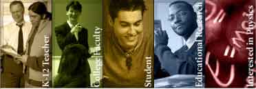

Easy Java Simulations (EJS) can download and install models from on-line digital libraries if your computer is connected to the internet. Contact the EJS developer, Francisco Esquembre, if you have an extensive collection of EJS models and would like to host your own EJS library. If you have a small number of EJS models you can suggest that your models be included in an already existing digital library.
Information about EJS is available at: <http://www.um.es/fem/Ejs/>.
The comPADRE Pathway, a part of the National Science Digital Library, is a growing network of educational resource collections supporting teachers and students in Physics and Astronomy. As a user you may explore collections designed to meet your specific needs and help build the network by recommending resources, commenting on resources, and starting or joining discussions. Information about the OSP comPADRE Collection is available at: <http://www.compadre.org/OSP/>.
To recommend an EJS model, visit the Suggest a Resource page in the OSP Collection. <http://www.compadre.org/osp/items/suggest.cfm>. Contact the OSP Collection editor, Wolfgang Christian, for additional information about EJS models in this collection.
The Examples Digital Library contains examples that demonstrate EJS modeling techniques. Models in this collection are organized (alphabetically) by categories in the table of contents.
The Modeling Science Digital Library contains examples from the book Modeling Science: From freefall to chaos by Francisco Esquembre and Wolfgang Christian. The models are organized by book chapter and illustrate how the creation of simulations (modeling) can be an effective tool to introduce students to a wide range of phenomena in different scientific disciplines, with an emphasis on Physics. Draft book chapters are available on the EJS and comPADRE websites.